Indexing
Chapter Goals :
• Learn how to index a DataFrame to retrieve rows and columns
• Write code for indexing a DataFrame
~~~~~~~~~~~~~~~~~~~~~~~~~~~~~~~~~
Direct Indexing
When indexing into a DataFrame, we can treat the DataFrame as a dictionary of Series of objects,where each column represents a Series. Each column label then becomes a key, allowing us to directly retrieve columns using dictionay-like bracket notation.
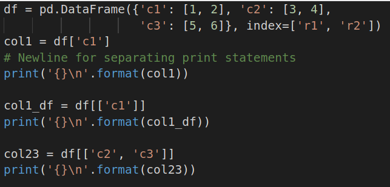 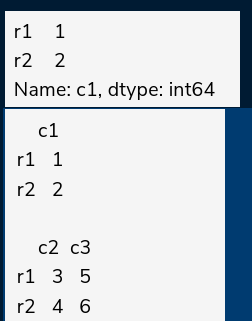
Note that when we use a single column label inside the bracket (as was the case og c1 in the code example), the output is a series representing the corresponding column. When we use a list of column labels, the output is a DataFrame that contains the corresponding columns.
We can also use direct indexing to retrieve a subset of the rows (as a Data Frame). However, we can only retrieve rows based on slices,rather than specifying particular rows.
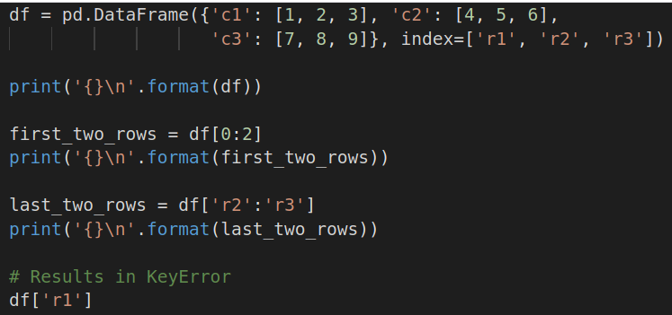 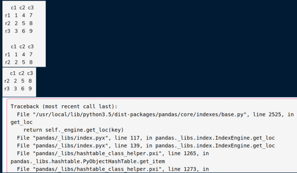
You'll notice that when we used integer indexing for the rows, the end index was exclusive. However, when we use row labels, the end index is inclusive.
Furthermore, when we tried to retrieve a single row based on its label, we received a keyError. This is because the DataFrame treated `r1` as a column label.
~~~~~~~~~~~~~~~~~~~~~~~~~~~~~~~~~
Other indexing
Apart from direct indexing , a Data Frame object also contains the loc and iloc properties for indexing.
iloc : to access rows based on their integer index. Using iloc we can access a single row as a Series, and specify particular rows to access through a list of integers or a booleans array.
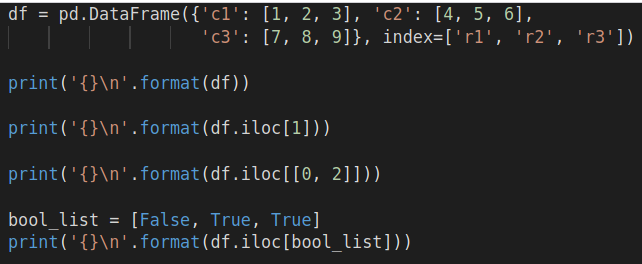 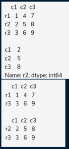
loc : It provides the same row indexing functionality as iloc, but uses row labels rather than integer indexes. Furthermore, with loc we can perform column indexing along with row indexing, and set new values in a DataFrame for specific rows and columns.
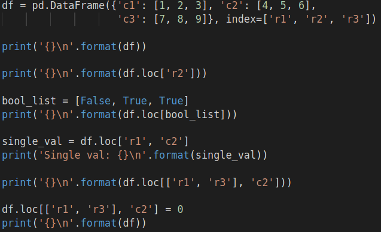 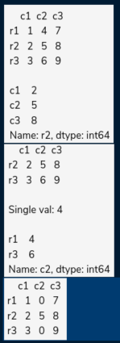
~~~~~~~~~~~~~~~~~~~~~~~~~~~~~~~~~
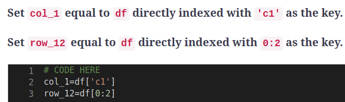
~~~~~~~~~~~~~~~~~~~~~~~~~~~~~~~~~
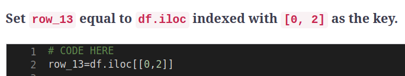
~~~~~~~~~~~~~~~~~~~~~~~~~~~~~~~~~
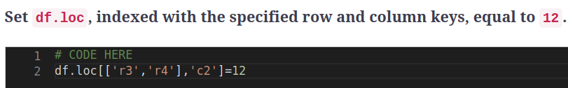